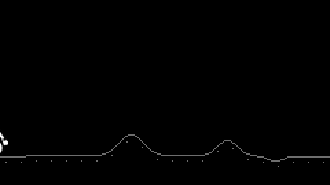
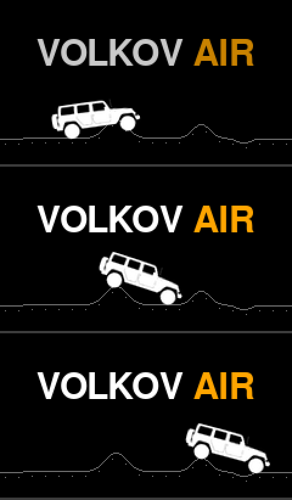
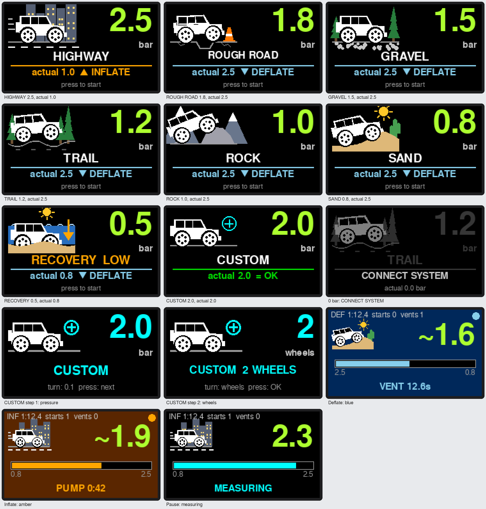
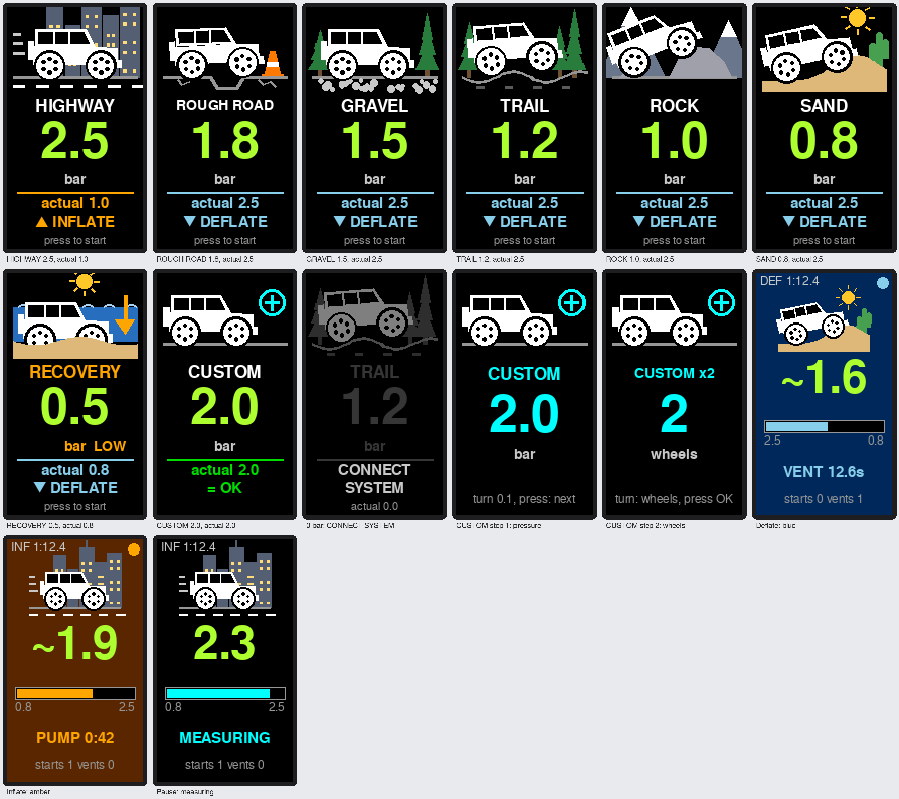
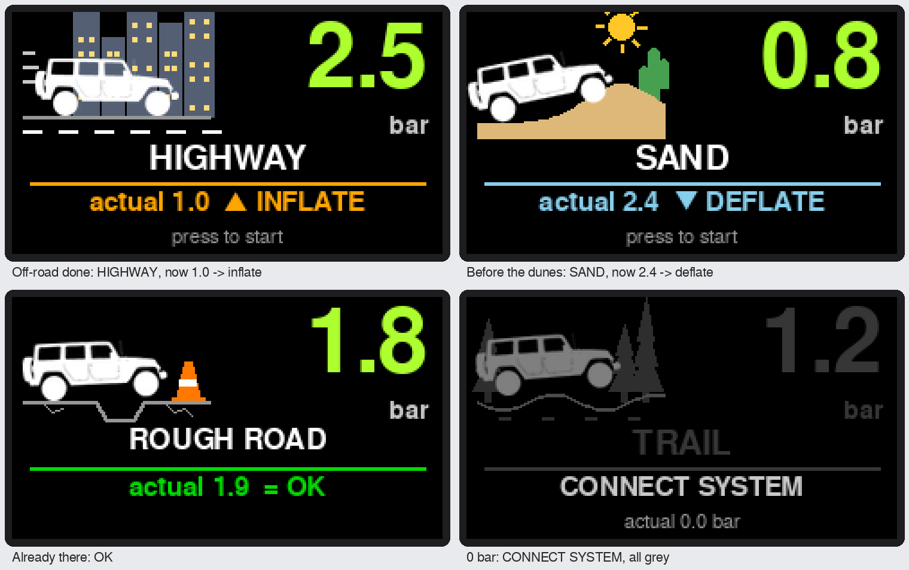
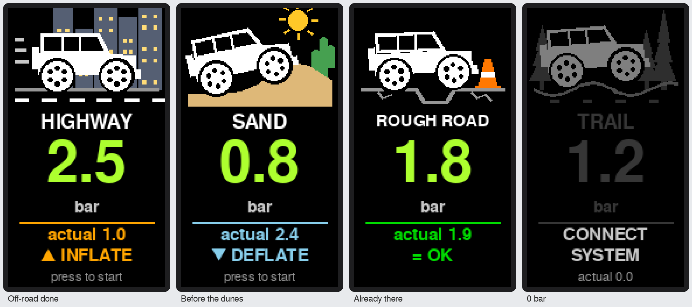
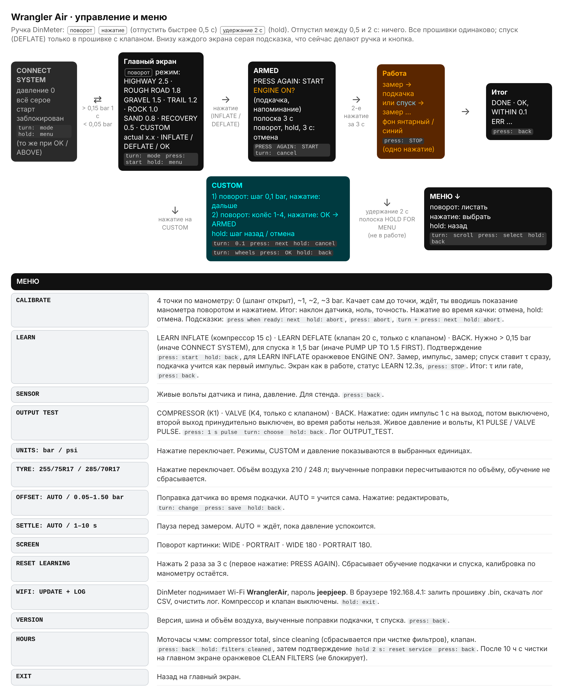

Состояние на 19.11.2026, все прошивки. Макеты нарисованы скриптом в масштабе экрана 240×135; на настоящем DinMeter ещё не проверены.
1,6 с после включения, нажатие пропускает. VOLKOV AIR, машинка переезжает кочки.


Поворот ручки листает режимы. Строка actual показывает текущее давление и что будет: ▲ INFLATE, ▼ DEFLATE или = OK. При 0 bar всё серое и CONNECT SYSTEM. CUSTOM: шаг 1 давление по 0,1, шаг 2 число колёс 1-4. Во время работы фон янтарный (качает) или синий (спускает).




Старт в два нажатия за 3 с, удержание 2 с открывает меню, внизу каждого экрана подсказка.
